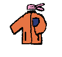
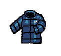
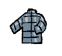
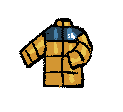
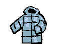
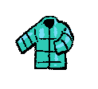

Coats.
1.
2.
Scarves and propolis jackets.
3.
Adidas.
4.
Blue padded jackets with weasel fur on the hood.
/blue.png)
5.
Tteokbokki coat.
6.
Hand-knitted scarves, leather gloves,and coats.
7.
I often wore scarves because I had weak bronchial health.
8.
Tteokbokki coat.
9.
Winter fashion didn’t really change much. If anything, the clothes were maybe a bit more colorful.
10.
Ugg boots.
11.
Sunglasses with flared pants?
12.
No long puff jackets.
13.
Always North Face.
14.
When I was little, I didn’t really care what people wore, but most kids wore puffer jackets.
15.
Long coats.
16.
Military-style jackets with beanies.
17.
Fluorescent-colored coats or padded jackets were trendy!
18.
Ugg boots (Im Soo-jung in I’m Sorry, I Love You)


00:00